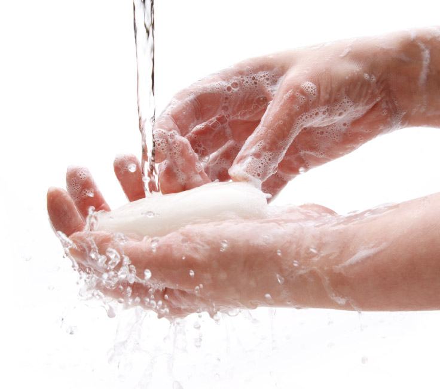
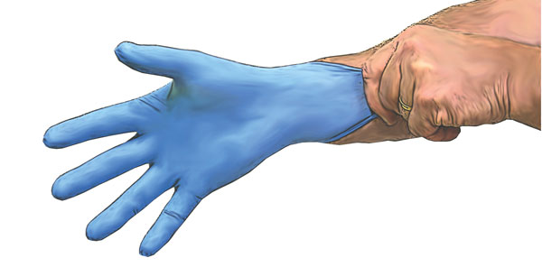
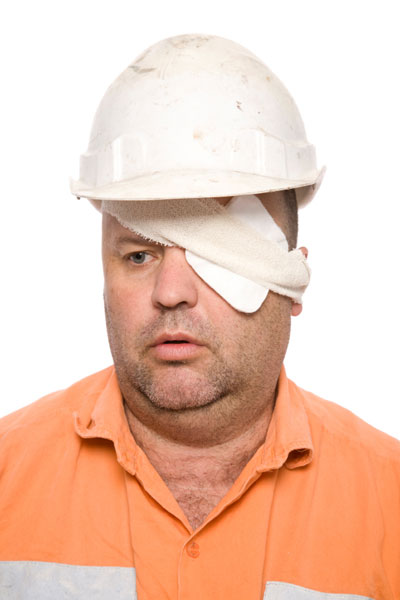

Eye Irrigation
Eye Irrigation
1. Wash your hands.
2. Explain to the casualty what you are going to do.
3. Examine eye.
4. Prepare equipment.
 eye wash (check expiry dates)
eye wash (check expiry dates)
 kidney dish
kidney dish
 paper towel
paper towel
5. Wash your hands and put on gloves.
6. Ensure adequate lighting.
7. Position the casualty (normally sitting)
 eye to be irrigated down
eye to be irrigated down
 reassure and make comfortable
reassure and make comfortable
 ask casualty to open eye
ask casualty to open eye
 you may need to assist the casualty to keep their eye open
you may need to assist the casualty to keep their eye open
8. Place kidney dish against cheek.
9. Direct a continuous steady stream of irrigating eye wash solution towards the inner part of the eye, move the stream towards the outside of the eye. Do not touch the eye with the eye wash device.
10. Re-examine eye.
11. Repeat eye irrigation if unsuccessful.
12. Dry casualty's face.
13. Wash hands.
14. Apply eye pad if required.
15. Refer for further medical assistance if required.
16. Clean equipment and re-stock.